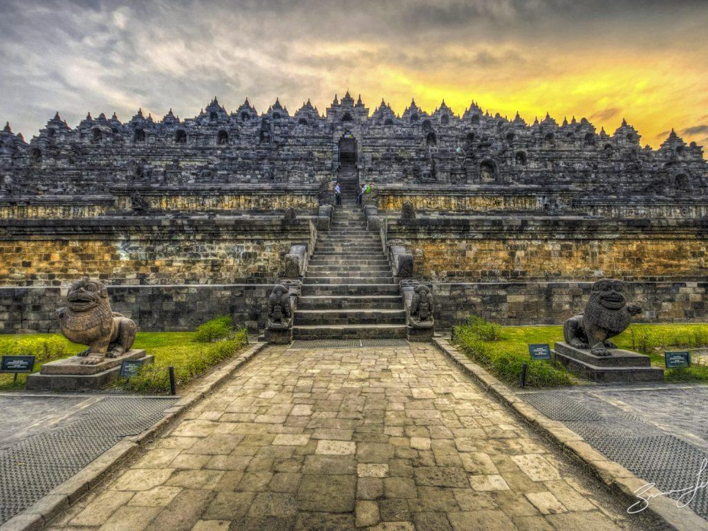
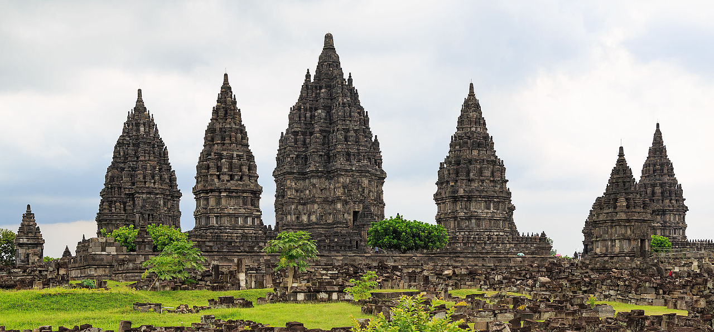
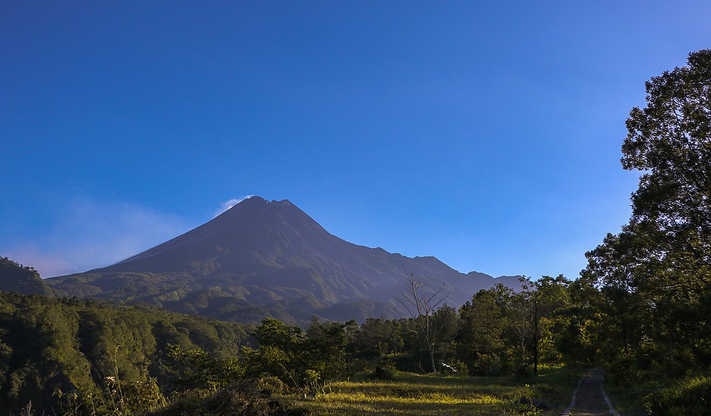
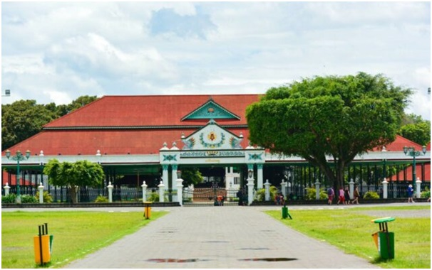

WISATA

CANDI BOROBUDUR
Borobudur adalah sebuah candi Buddha yang terletak di Borobudur, Magelang, Jawa Tengah, Indonesia. Candi ini terletak kurang lebih 100 km di sebelah barat daya Semarang, 86 km di sebelah barat Surakarta, dan 40 km di sebelah barat laut
Yogyakarta. Candi dengan banyak stupa ini didirikan oleh para penganut agama Buddha Mahayana sekitar tahun 800-an Masehi pada masa pemerintahan wangsa Syailendra. Borobudur adalah candi atau kuil Buddha terbesar di dunia,sekaligus
salah satu monumen Buddha terbesar di dunia. Monumen ini terdiri atas enam teras berbentuk bujur sangkar yang di atasnya terdapat tiga pelataran melingkar, pada dindingnya dihiasi dengan 2.672 panel relief dan aslinya terdapat 504
arca Buddha. Borobudur memiliki koleksi relief Buddha terlengkap dan terbanyak di dunia. Stupa utama terbesar teletak di tengah sekaligus memahkotai bangunan ini, dikelilingi oleh tiga barisan melingkar 72 stupa berlubang yang di dalamnya
terdapat arca Buddha tengah duduk bersila dalam posisi teratai sempurna dengan mudra (sikap tangan) Dharmachakra mudra (memutar roda dharma). Monumen ini merupakan model alam semesta dan dibangun sebagai tempat suci untuk memuliakan
Buddha sekaligus berfungsi sebagai tempat ziarah untuk menuntun umat manusia beralih dari alam nafsu duniawi menuju pencerahan dan kebijaksanaan sesuai ajaran Buddha. Para peziarah masuk melalui sisi timur dan memulai ritual di dasar
candi dengan berjalan melingkari bangunan suci ini searah jarum jam, sambil terus naik ke undakan berikutnya melalui tiga tingkatan ranah dalam kosmologi Buddha. Ketiga tingkatan itu adalah Kāmadhātu (ranah hawa nafsu), Rupadhatu (ranah
berwujud), dan Arupadhatu (ranah tak berwujud). Dalam perjalanannya para peziarah berjalan melalui serangkaian lorong dan tangga dengan menyaksikan tak kurang dari 1.460 panel relief indah yang terukir pada dinding dan pagar langkan.

CANDI PRAMBANAN
Candi Prambanan atau Candi Roro Jonggrang adalah kompleks candi Hindu (Syaiwa) terbesar di Indonesia yang dibangun pada abad ke-9 masehi. Candi ini dipersembahkan untuk Trimurti, tiga dewa utama Hindu yaitu dewa Brahma sebagai dewa pencipta,
dewa Wisnu sebagai dewa pemelihara, dan dewa Siwa sebagai dewa pemusnah. Berdasarkan prasasti Siwagrha nama asli kompleks candi ini adalah Siwagrha (bahasa Sanskerta yang bermakna 'Rumah Siwa'), dan memang di garbagriha (ruang utama)
candi ini bersemayam arca Siwa Mahadewa setinggi tiga meter, dikarenakan aliran Syaiwa yang mengutamakan pemujaan dewa Siwa di candi ini. Kompleks percandian Candi Prambanan secara keseluruhan berada di wilayah provinsi Daerah Istimewa
Yogyakarta, namun pintu administrasinya berada di Jawa Tengah, hal ini yang membuat Candi Prambanan terletak di 2 tempat yakni di kelurahan Bokoharjo, kapanéwon Prambanan, kabupaten Sleman, Daerah Istimewa Yogyakarta, dan di desa Tlogo,
kecamatan Prambanan, kabupaten Klaten, Jawa Tengah, atau kurang lebih 17 kilometer timur laut dari kota Jogja, 50 kilometer barat daya dari kota Surakarta dan 120 kilometer selatan dari kota Semarang, persis di perbatasan antara Daerah
Istimewa Yogyakarta dan Jawa Tengah

GUNUNG MERAPI
Gunung Merapi (ketinggian puncak 2.930 mdpl, per 2010) adalah gunung berapi di bagian tengah Pulau Jawa dan merupakan salah satu gunung api teraktif di Indonesia. Lereng sisi selatan berada dalam administrasi Kabupaten Sleman, Daerah Istimewa
Yogyakarta, dan sisanya berada dalam wilayah Provinsi Jawa Tengah, yaitu Kabupaten Magelang di sisi barat, Kabupaten Boyolali di sisi utara dan timur, serta Kabupaten Klaten di sisi tenggara. Kawasan hutan di sekitar puncaknya menjadi
kawasan Taman Nasional Gunung Merapi sejak tahun 2004. Gunung ini memiliki potensi kebencanaan yang tinggi karena menurut catatan modern, gunung merapi telah mengalami erupsi setiap dua sampai lima tahun sekali dan dikelilingi oleh
permukiman yang padat. Sejak tahun 1548, gunung ini sudah meletus sebanyak 68 kali. Kota Magelang dan Kota Yogyakarta adalah kota besar terdekat, berjarak kurang dari 30km dari puncaknya. Di lerengnya masih terdapat permukiman sampai
ketinggian 1.700 meter dan hanya berjarak empat kilometer dari puncak. Oleh karena tingkat kepentingannya ini, Merapi menjadi salah satu dari enam belas gunung api dunia yang termasuk dalam proyek Gunung Api Dekade Ini (Decade Volcanoes).

KERATON YOGYAKARTA
Keraton Ngayogyakarta Hadiningrat atau Keraton Yogyakarta merupakan istana resmi Kesultanan Ngayogyakarta Hadiningrat yang kini berlokasi di Kota Yogyakarta. Keraton ini didirikan oleh Sri Sultan Hamengkubuwana I pada tahun 1755 sebagai
Istana/Keraton Yogyakarta yang baru berdiri akibat perpecahan Mataram Islam dengan adanya Perjanjian Giyanti. Keraton ini adalah pecahan dari Keraton Surakarta Hadiningrat dari Kesunanan Surakarta (Kerajaan Surakarta). Sehingga dinasti
Mataram diteruskan oleh 2 Kerajaan yakni Kesultanan Yogyakarta dan Kesunanan Surakarta. Total luas wilayah keseluruhan keraton yogyakarta mencapai 184 hektar, yakni meliputi seluruh area di dalam benteng Baluwarti, alun-alun Lor, alun-alun
Kidul, gapura Gladak, dan kompleks Masjid Gedhe Yogyakarta. Sementara luas dari kedhaton (inti keraton) mencapai 13 hektar. Walaupun Kesultanan Yogyakarta secara resmi telah menjadi bagian Republik Indonesia pada tahun 1945, kompleks
bangunan keraton ini masih berfungsi sebagai tempat tinggal sultan dan rumah tangga istananya yang masih menjalankan tradisi kesultanan hingga saat ini. Keraton ini kini juga merupakan salah satu objek wisata di Kota Yogyakarta. Sebagian
kompleks keraton merupakan museum yang menyimpan berbagai koleksi milik kesultanan, termasuk berbagai pemberian dari raja-raja Eropa, replika pusaka keraton, dan gamelan. Dari segi bangunannya, keraton ini merupakan salah satu contoh
arsitektur istana Jawa yang terbaik, memiliki balairung-balairung mewah dan lapangan serta paviliun yang luas.
PANTAI PARANGTRITIS
Pantai Parangtritis adalah tempat wisata yang terletak di Desa Parangtritis, Kapanéwon Kretek, Kabupaten Bantul, Daerah Istimewa Yogyakarta. Jaraknya kurang lebih 27 km dari pusat Kota Yogyakarta. Pantai ini menjadi salah satu destinasi
wisata terkenal di Yogyakarta dan telah menjadi ikon pariwisata di Yogyakarta. Pantai ini mempunyai nilai simbolis yang merupakan garis yang bersifat magis yang menghubungkan Panggung Krapyak, Keraton Yogyakarta, Tugu Yogyakarta dan
Gunung Merapi yang dikenal sebagai Garis Imajiner Yogyakarta. Pantai yang terletak di sisi timur Pantai Parangkusumo ini memiliki legenda yang melekat dengan Ratu Kidul sebagai penguasa laut selatan dan keindahannya. Pantai ini merupakan
pantai yang cukup luas di Yogyakarta, berbeda dengan pantai-pantai di kawasan Yogyakarta lainya seperti Pantai di Gunungkidul yang ukurannya relatif kecil. Pantai Parangtritis juga memungkian wisatawan untuk menyaksikan matahari terbit
dan matahari terbenam. Pantai ini menawarkan aktivitas lain bagi para wisatawan seperti mengelilingi pantai dengan menggunakan motor ATV, kuda maupun delman, melakukan olahraga seperti berlari, sepak bola dan voli di pasir pantai,
bermain di pinggir ombak, bermain layangan, atau sekadar duduk-duduk sambil menikmati suasana Pantai Parangtritis.
REVIEW
Candi Borobudur
100%
Candi Prambanan
100%
Gunung Merapi
100%
Keraton Yogyakarta
100%
Pantai Parangtritis
100%
ABOUT
Sebelum Indonesia merdeka, Yogyakarta merupakan daerah yang mempunyai pemerintahan sendiri atau disebut Zelfbestuurlandschappen/Daerah Swapraja, yaitu Kasultanan Ngayogyakarta Hadiningrat dan Kadipaten Pakualaman. Kasultanan Ngayogyakarta
Hadiningrat didirikan oleh Pangeran Mangkubumi yang bergelar Sultan Hamengku Buwono I pada tahun 1755, sedangkan Kadipaten Pakualaman didirikan oleh Pangeran Notokusumo (saudara Sultan Hamengku Buwono II) yang bergelar Adipati Paku
Alam I pada tahun 1813. Pemerintah Hindia Belanda mengakui Kasultanan, dan Pakualaman sebagai kerajaan dengan hak mengatur rumah tangganya sendiri yang dinyatakan dalam kontrak politik. Kontrak politik yang terakhir Kasultanan tercantum
dalam Staatsblaad 1942 Nomor 47, sedangkan kontrak politik Pakualaman dalam Staatsblaad 1941 Nomor 577. Eksistensi kedua kerajaan tersebut telah mendapat pengakuan dari dunia internasional, baik pada masa penjajahan Belanda, Inggris,
maupun Jepang. Ketika Jepang meninggalkan Indonesia, kedua kerajaan tersebut telah siap menjadi sebuah negara sendiri yang merdeka, lengkap dengan sistem pemerintahannya (susunan asli), wilayah, dan penduduknya.
CONTACT
Alamat
Daerah Istimewa Yogyakarta